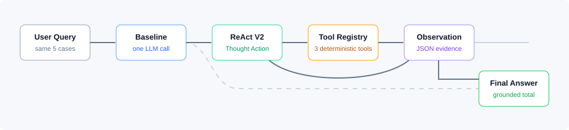

Baseline Chatbot
1 LLM call · 0 tools
- Status
- Missing evidence
Lab 03 · Chatbot vs ReAct Agent

Chatbot và Agent nhận cùng input; chỉ Agent được gọi tool.
Mỗi Action sinh đúng một Observation do application chèn vào.
Returns price, stock, weight_kg, status.
Validates WINNER or returns structured coupon error.
Calculates shipping cost and estimated days.
Failed trace: V1 repeated check_stock until max steps. V2 adds one guardrail: stop when the exact same tool and args repeat without new evidence.